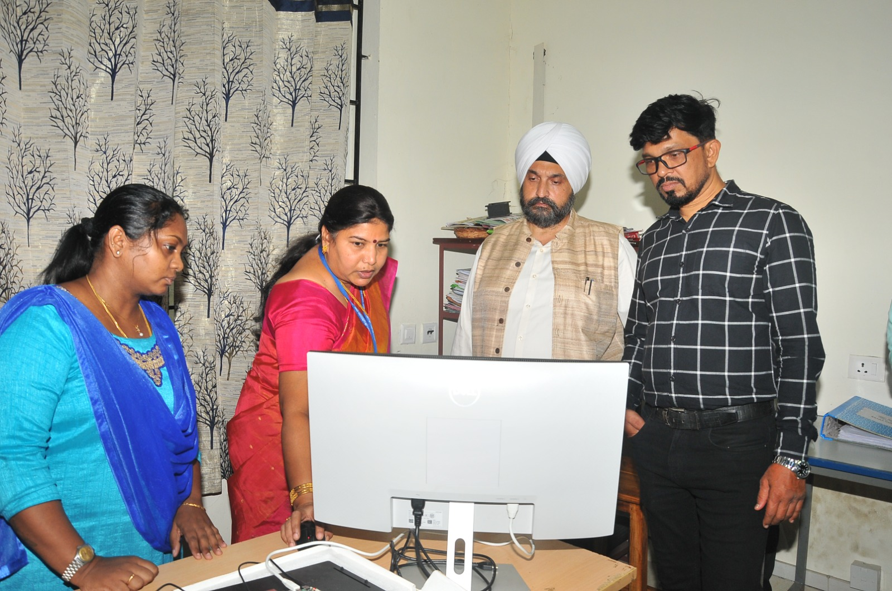
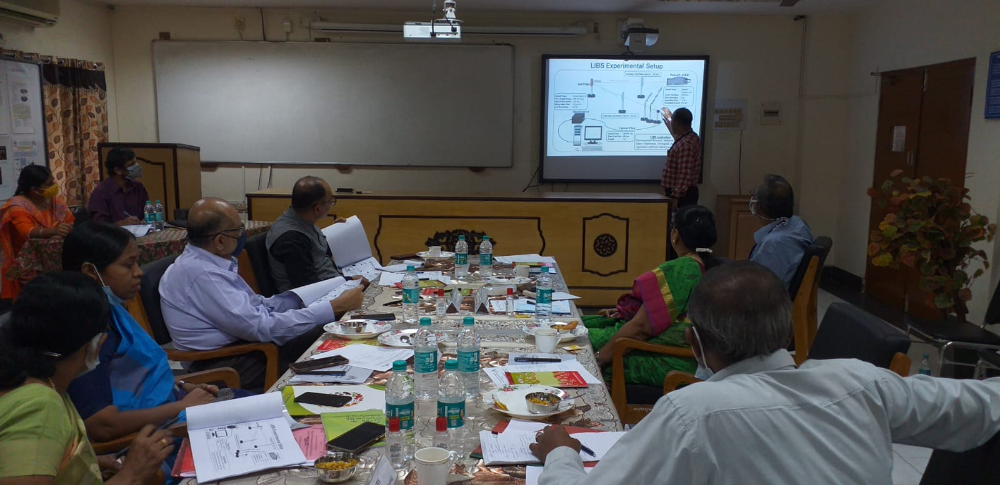
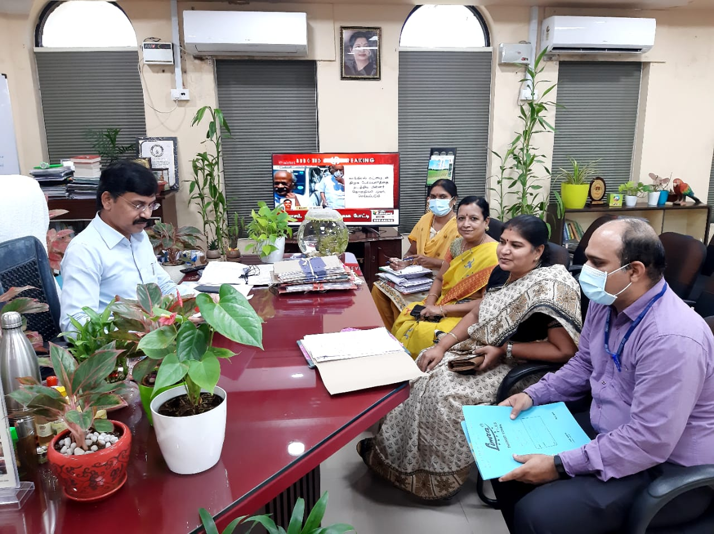
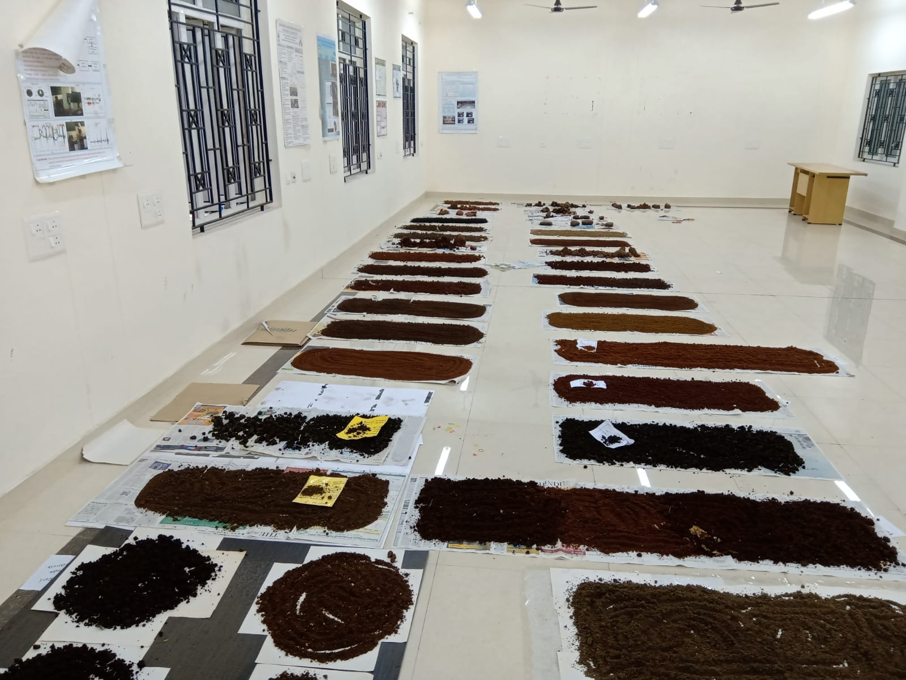
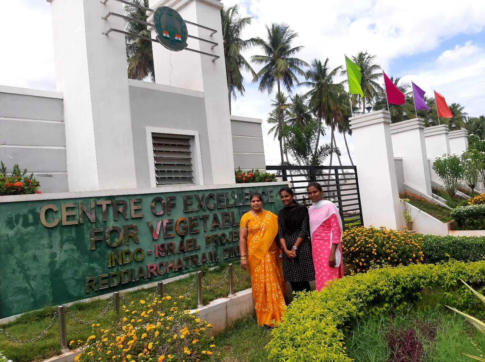

Focus Area
At our Center for Internet of Things (IoT), we specialize in developing tailored solutions across various industries, including healthcare, manufacturing, agriculture, and smart cities. Our expertise encompasses IoT solutions development, advanced data analytics, cybersecurity, connectivity and networking, smart infrastructure, industrial IoT (IIoT), healthcare, agriculture, smart transportation, logistics, and education. Through collaborative research and innovative practices, we aim to drive advancements in IoT technology and its practical applications, empowering businesses and communities to harness the full potential of the IoT ecosystem.
Current Projects



Completed Projects



National Publication
- 1.Parameswaran Ramesh, P. T. V. Bhuvaneswari, Bino J, Shabana Parveen, Vidhya N, “An IoT Enabled Smart Building Monitoring and Control System”, Gradiva Review Journal, Vol.9, Issue 2, Feb 2023.
- 2.C. Meenakshi and S. Meyyappan.(2022). Data Interpretation through Pattern Matching in Big Data. Indian Journal of natural Sciences. 13(73), 46223-46229.
International Journal
- 1.P. Venkata Mahesh, S. Meyyappan & Rama Koteswara Rao Alla. (2022). ANew Multivariate Linear Regression MPPT Algorithm for Solar PV System with Boost Converter. ECTI Transactions on Electrical Engineering, Electronics, And Communications. 20(2), 269-281.
- 2.P. Venkata Mahesh, S. Meyyappan and Rama Koteswara RaoAlla.(2022). Maximum Power Point Tracking with Regression Machine Learning Algorithms for Solar PV Systems, International Journal of Renewable Energy Research. 12(3), 1327-1338.
- 3.P. Venkata Mahesh, S. Meyyappan and Rama Koteswara Rao Alla.(2022). Maximum Power Point Tracking using Decision-Tree Machine Learning Algorithm for Photovoltaic Systems. Clean Energy. 6(5), 762-775.
- 4.P. Venkata Mahesh, S. Meyyappan and Rama Koteswara Rao Alla. (2023).Support Vector Regression Machine Learning based Maximum Power Point Tracking for Solar Photovoltaic systems. International Journal of Electrical and Computer Engineering. 14(1),100 - 108.
Outcomes
Through our research efforts at the Center for Internet of Things (IoT), we strive to achieve impactful outcomes that drive innovation and address real-world challenges. Few of the key outcomes of our research are given below:
- Development of innovative IoT solutions tailored to industry needs.
- Implementation of robust cybersecurity measures.
- Optimization of connectivity and networking protocols.
- Promotion of sustainable agricultural practices.
- Establishment of educational programs and collaborative research initiatives.